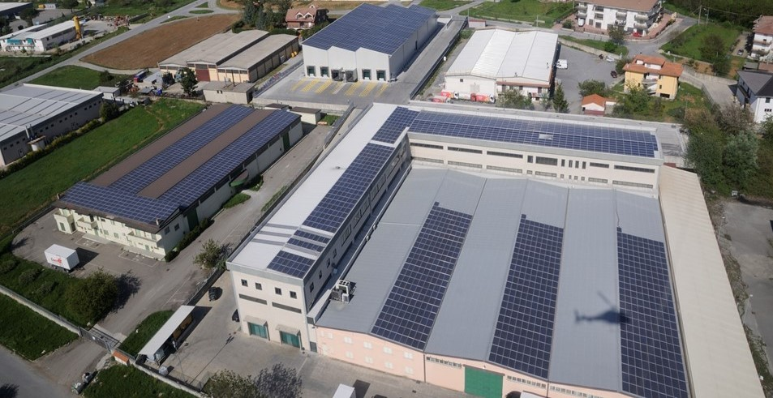

ORGANIZZAZIONE

IL CE.DI.
Il nostro Nuovo Ce.DI. Altilia è una piattaforma di distribuzione, in grado di servire e supportare le diverse insegne grazie ad una avanzata gestione logistica. Il centro gestisce integralmente i processi di tracciabilità grazie all’impianto di radiofrequenza, grazie ad avanzati processi di automatizzazione riusciamo a soddisfare le esigenze logistiche di tutti i nostri affiliati.
La tecnologia voice offre numerosi vantaggi rispetto ai metodi tradizionali di allestimento ordini, quali gli elenchi cartacei o i terminali wireless. Anziché basare la comunicazione sul fattore visivo tramite carta o monitor di computer, il voice si affida a istruzioni vocali tramite cuffie e un microfono.

Terminali su Carrelli
Non sarà più necessaria l’immissione manuale di dati o la scansione laboriosa delle postazioni delle giacenze. Le istruzioni inviate all’operatore e le sue risposte avverranno invece oralmente.
I ritardi provocati dalle interruzioni dell’operatore durante il prelievo degli articoli per immettere i dati in un dispositivo sono oramai appartenenti al passato. L’attività è ottimizzata e la produttività aumenta.
Oltre allle fasi di prelievo al picking, le operazione di stocchaggio sono totalmente gestiti da terminali a bordo dei nostri carrelli i quali si occupano di tutte le operazioni di stoccaggio e di quelle di rifornimento picking
Pesa del Pallet
La Ribalta
Inoltre tutte le pedane vengono pesate e controllate prima della spedizione, questo per limitare errori ed inesattezze sulla preparazione e consegna dell'ordine dei nostri clienti.
Le migliori e più moderne tecnologie però non posso sostituire l'impegno e la professionalità che i nostri operatori mettono in campo ogni giorno per lo svolgimento delle varie operazioni di preparazione e stoccaggio fino alla consegna dell'ordine nel vostro punto vendita.